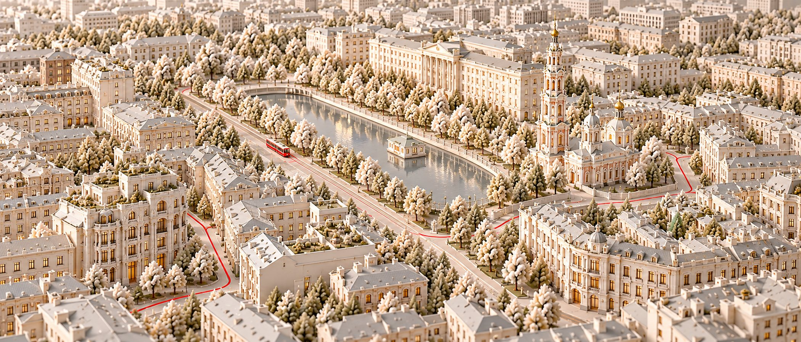
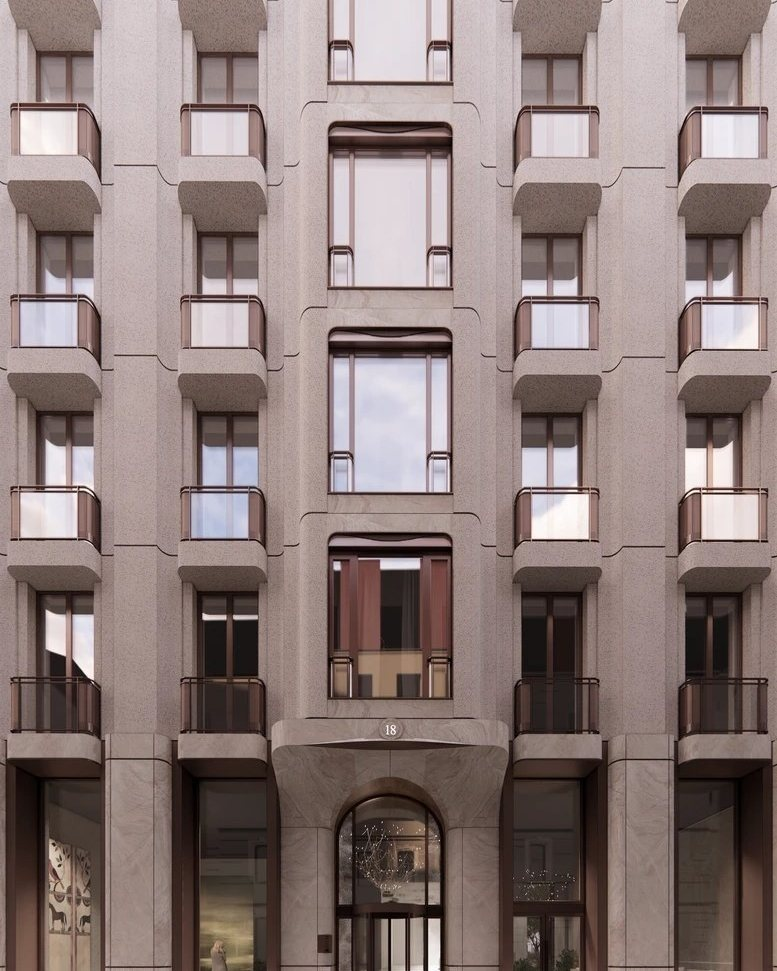
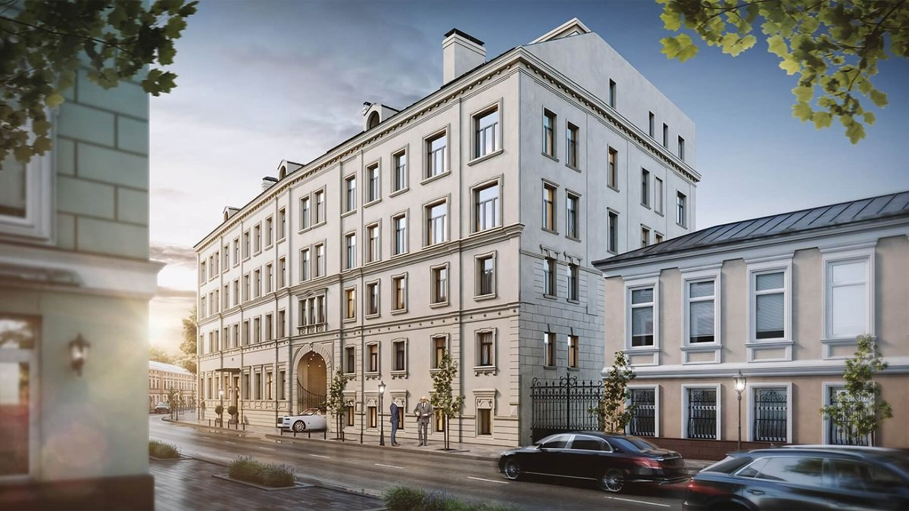

Район · перепроверено 10 октября 2026
Чистые пруды
На заметку: у Чистых прудов новые клубные дома продают по 2,04–2,49 млн за метр, а готовые квартиры в тех же переулках — по 1,27–1,77 млн. Разница — в возрасте дома и в статусе: самый дешёвый метр района — апартаменты в Современнике, 1,12 млн.

Откуда цифры
Один район, четыре калькулятора
| Кто считал | Что считал | Цена метра |
|---|---|---|
| «Инком-Недвижимость», сентябрь 2026 | всё вторичное жильё Басманного района | 475 тыс ₽ |
| bnMAP.pro, июнь 2026 | все новостройки района | 1,16 млн ₽, за год +43 % |
| «Метриум», март 2026 | новостройки района, все сегменты | 1,18 млн ₽ |
| NOTA, ЦИАН 10 октября 2026 | 6 домов разбора: вторичка и лоты застройщиков | вторичка — 1,36 млн ₽, у застройщиков — 2,18 млн ₽ |
Басманный район — это не только Чистые пруды, но и Курский вокзал, Лефортово и Разгуляй. Элитный сегмент района в 2026 году не считает ни один консультант, поэтому верхнюю цифру мы считаем сами — по шести домам разбора.
Красная линия
Семь вещей, на которые здесь стоит смотреть
| Что | Как здесь |
|---|---|
| Место | Три улицы: Потаповский у пруда, Машкова и Покровский бульвар. Вторичка: Потаповский — 1,77 млн за метр, Покровский — 1,27, Машкова — 1,12. |
| Вода | Чистый пруд — в 200 метрах от Фон Дессина. Сад Баумана — в 430 метрах от Дома Соболева. |
| Дом | Палаты XVII века (Абрикосов), дом «Якоря» 1915 года (Фон Дессин), доходный дом 1870-х с новой крышей (Современник) и новые клубные дома. |
| Соседи | 27 квартир в Абрикосове, 35 в Доме Соболева, 36 в Фон Дессине — и 207 в Доме на Покровском бульваре. |
| Паркинг | В Доме на Покровском бульваре два места на квартиру, в Доме Соболева — 1,49, в Фон Дессине — 1,25 при норме элиты 2,0. |
| Витрина | В Доме на Покровском бульваре 10 объявлений из 18 висят дольше полугода, медиана 224 дня. У Резиденции на Покровском бульваре объявлений нет. |
| Сценарий | Жизнь пешком: бульвары, трамвай, переулки. Школа «Покровский квартал» — в 6–8 минутах от Фон Дессина и Дома Соболева. |

Дом месяца
Абрикосов
27 квартир в усадьбе с палатами XVII века в Потаповском переулке, дом сдан в 2023 году. На вторичке десять объявлений, медиана 1,77 млн за метр, двухкомнатная — от 113 млн. Напротив, в Фон Дессине, Sminex просит 2,49. Два дома одного переулка и одного класса — а разница почти треть.
Название — от фабрикантов Абрикосовых, которые купили усадьбу. Кондитерской фабрики здесь не было, а палаты принадлежали ещё боярам Гурьевым.

Без отметки
Три места, где район не проходит собственную линию
Фон Дессин
Элит по нашей мерке, но 1,25 машиноместа на квартиру при норме 2,0. Метр у застройщика — 2,49 млн, у собственников в том же доме — 1,75–1,79.
Современник
Апартаменты: регистрация временная, налог выше. Поэтому и самый низкий метр района — 1,12 млн.
Пустая витрина
У Резиденции на Покровском бульваре нет ни одного объявления. В Доме на Покровском бульваре больше половины объявлений висят дольше полугода.
Чего мы не нашли
Цен сделок нет в открытом доступе — только цены предложения. Элитный сегмент Басманного района не считает ни один консультант. У Резиденции на Покровском бульваре нет даже цен предложения: их мы собираем по телефону.
Обложка сгенерирована для NOTA. Источники: «Инком-Недвижимость», bnMAP.pro — в пересказе РБК Недвижимости (июнь — сентябрь 2026); «Метриум» и MR — novostroy-m.ru (март 2026); ЦИАН — выгрузка NOTA 10 октября 2026; база NOTA — паспорта домов; novostroy-m.ru и сайты застройщиков — характеристики домов.